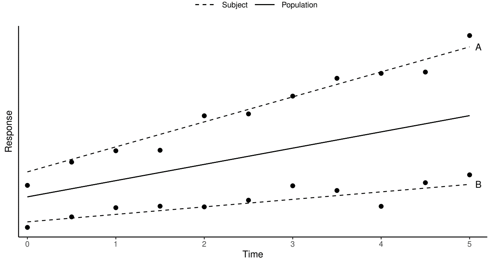
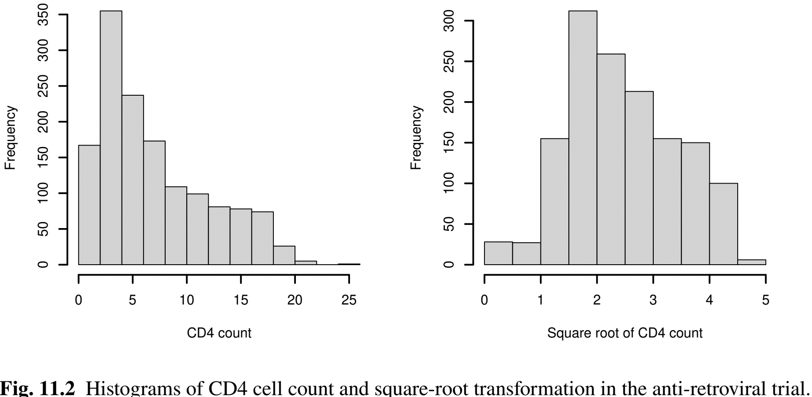
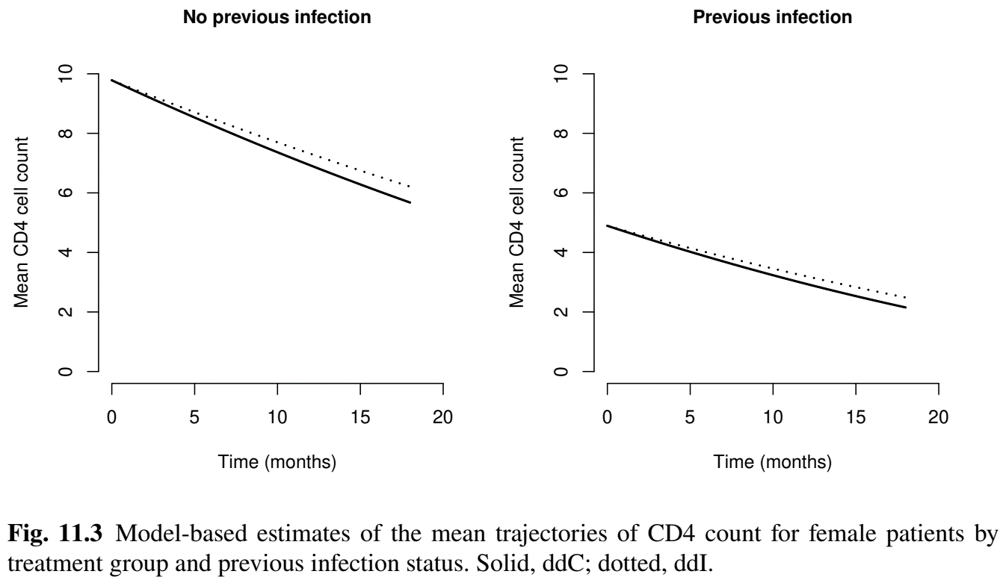
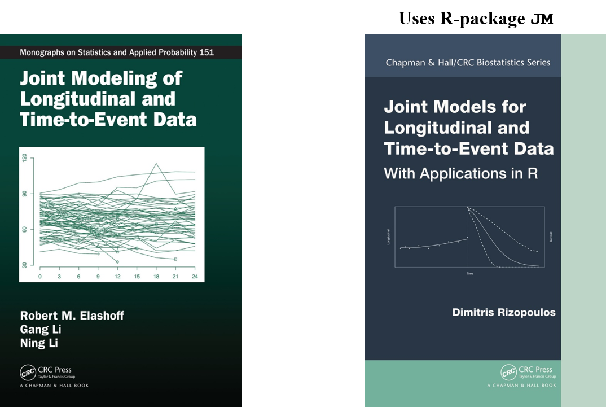

Applied Survival Analysis
Chapter 11 - Joint Analysis of Longitudinal and Survival Data
Department of Biostatistics & Medical Informatics
University of Wisconsin-Madison
Outline
- Linear mixed effects models for longitudinal data
- A two-stage joint modeling approach
- Extensions and dynamic prediction
- Analysis of an anti-retroviral drug trial
\[\newcommand{\d}{{\rm d}}\] \[\newcommand{\T}{{\rm T}}\] \[\newcommand{\dd}{{\rm d}}\] \[\newcommand{\cc}{{\rm c}}\] \[\newcommand{\pr}{{\rm pr}}\] \[\newcommand{\var}{{\rm var}}\] \[\newcommand{\se}{{\rm se}}\] \[\newcommand{\indep}{\perp \!\!\! \perp}\] \[\newcommand{\Pn}{n^{-1}\sum_{i=1}^n}\]
Overview
- Background
- Biomarkers, quality of life measured longitudinally while being followed for a clinical event
- Joint modeling
- Association between biomarker and (clinical) endpoint
- CD4 cell count \(\to\) death from AIDS
- Serum creatinine/eGFR \(\to\) kidney failure
- Dependent dropout (death) in longitudinal analysis
- Dynamic prediction of survival/biomarker
- Association between biomarker and (clinical) endpoint
Linear Mixed Effects Models
Longitudinal Data
- Outcome Data
- \(Y_{i1},\ldots, Y_{in_i}\) longitudinal responses measured on subject \(i\) at the \(t_{ij}\)
- \(t_{i1},\ldots, t_{in_i}\): measurement occasions for subject \(i\)
- \(Z_{ij}\): covariates on subject \(i\) at \(t_{ij}\)
- Patient characteristics \(+\) time trend (functions of \(t_{ij}\))
- Longitudinal regression
- Mean model \[ E(Y_{ij}\mid Z_{ij}) = \gamma_0 + \gamma^\T Z_{ij} \]
- Example: \(Z_{ij}=(A_i, t_{ij}, A_it_{ij})^\T\); \(A_i = 1, 0\): treatment indicator \[\begin{equation}\label{eq:longit:linear_exam} E(Y_{ij}\mid A_i)=\gamma_0+\gamma_1A_i+\gamma_2t_{ij}+\gamma_3A_it_{ij}. \end{equation}\]
Handling Correlations
- Challenge: correlation of the \(Y_{ij}\) over \(t_{ij}\)
- Standard least squares invalid or suboptimal
- Linear mixed effects (LME) models \[\begin{equation}\label{eq:longit:lme}
Y_{ij}=\gamma_0+\gamma^\T Z_{ij}+b_i^\T\tilde Z_{ij}+\epsilon_{ij}
\end{equation}\]
- \(\tilde Z_{ij}\) contains 1 and a subset of \(Z_{ij}\)
- \(b_i\sim \mathcal N(0,\Sigma_b)\): subject-specific random effects (intercept, slope)
- Induces correlation within subject
- \(\epsilon_{ij}\sim_{\rm i.i.d.} \mathcal N(0,\sigma^2)\): random measurement error
- True values without measurement error \[ E(Y_{ij}\mid Z_{ij}, b_i)=\gamma_0+\gamma^\T Z_{ij}+b_i^\T\tilde Z_{ij} \]
LME Example
- Random intercept \(+\) random slope
- \(Y_{ij}=\gamma_0+\gamma_1t_{ij}+b_{i0}+b_{i1}t_{ij}+\epsilon_{ij}\)
- \(Z_{ij}=t_{ij}\), \(\tilde Z_{ij}=(1, t_{ij})^\T\), \(b_i=(b_{i0},b_{i1})^\T\)
- \(Y_{ij}=\gamma_0+\gamma_1t_{ij}+b_{i0}+b_{i1}t_{ij}+\epsilon_{ij}\)

Estimation and Inference
- EM algorithm with \(b_i\) as missing data
- \(E\)-step: conditional expectation of \(b_i\) and \(b_i^2\) given observed data
- Explicit under multivariate normal
- \(M\)-step: (weighted) least squares
- \(E\)-step: conditional expectation of \(b_i\) and \(b_i^2\) given observed data
- Variance components
- \(\hat\Sigma_b\) and \(\hat\sigma_2\)
Two-Stage Joint Modeling
Rationale
- Traditional approach
- Cox model for survival vs observed biomarker as (internal) time-varying covariates
- Limitations
- Biomarker measured at discrete times, with missing data in-between
- Biomarker measured with error (sometimes with erratic noise)
- Two-stage modeling
- Longitudinal sub-model: true biomarker process over continuous time
- Survival sub-model: Cox model with true biomarker process as time-varying covariate
Longitudinal Sub-Model
- Conceptual setup
- \(Y_i(t)\): latent biomarker process at time \(t\)
- \(Y_i(t_{ij}) = Y_{ij}\)
- \(Z_i(t), \tilde Z_i(t)\): latent covariate processes at time \(t\)
- \(Z_i(t_{ij}) = Z_{ij}\); \(\tilde Z_i(t_{ij}) = \tilde Z_{ij}\)
- \(Y_i(t)\): latent biomarker process at time \(t\)
- Reformulation of LME \[\begin{equation}\label{eq:longit:longit_sub}
Y_i(t)=m_i(t)+\epsilon_i(t),
\end{equation}\]
- \(m_i(t)=\gamma_0+\gamma^\T Z_i(t)+b_i^\T\tilde Z_i(t)\): True biomarker process
- \(\epsilon_i(t)\): Error process
Survival Sub-Model
- Model specification \[\begin{equation}\label{eq:longit:survival_sub}
\pr\{t\leq T_i<t+\dd t\mid Z_i^*, \overline m_i(t)\}=\exp\{\beta^\T Z_i^*+\nu m_i(t)\}\lambda_0(t)\dd t
\end{equation}\]
- \(T_i\): survival endpoint
- \(\overline m_i(t)=\{m_i(u):0\leq u\leq t\}\): biomarker history
- \(Z_i^*\): baseline covariates to be adjusted for in survival model
- \(\nu\): log-hazard ratio resulting from one unit increase in current biomarker
- Estimation
- \(E\)-step: conditional expectation of the \(b_i\) (numerical integration)
- \(M\)-step: (weighted) least squares \(+\) partial-likelihood score
Extension and Dynamic Prediction
Interaction and Trend Effect
- Biomarker effect by baseline group
- Biomarker \(\times\) baseline interaction \[ \pr(t\leq T_i<t+\dd t\mid Z_i^*, \overline m_i(t))=\exp\big\{\beta^\T Z_i^*+\nu m_i(t)+ \tilde\nu^\T Z_i^*m_i(t)\big\}\lambda_0(t)\dd t \]
- Effect of biomarker trend (change rate)
- Longitudinal sub-model \[\begin{equation}\label{eq:longit:longit_sub_slope} m_i(t)=\gamma_0+\gamma^\T Z_i+\eta t+b_{i0}+b_{i1}t, \end{equation}\]
- Survival sub-model \[\begin{equation}\label{eq:longit:survival_sub_rand} \pr(t\leq T_i<t+\dd t\mid Z_i, b_i)=\exp\{\beta^\T Z_i+\nu_0b_{i0}+\nu_1b_{i1}\}\lambda_0(t)\dd t. \end{equation}\]
- \(\nu_1\):log-hazard ratio by unit increase in biomarker change rate
GLME Models
- Generalized linear mixed-effects models
Binary, categorical, count biomarkers \[\begin{equation}\label{eq:longit:glmm} g\left[E\{Y_i(t)\mid Z_i,b_i\}\right]=\gamma_0+\gamma^\T Z_i(t)+b_i^\T\tilde Z_i(t) \end{equation}\]
Example : logistic regression with \(g(x)=\log\{x/(1-x)\}\)
Subject-level trajectory \[m_i(t)=g^{-1}\left\{\gamma_0+\gamma^\T Z_i(t)+b_i^\T\tilde Z_i(t)\right\}\]
Survival sub-model: Cox model against \(m_i(t)\) (or \(b_i\))
- Multivariate survival endpoints
- Shared-fraity sub-models \[\begin{equation}\label{eq:longit:survival_sub_mult} \pr\{t\leq T_{ik}<t+\dd t\mid \xi_i, Z_i^*, \overline m_i(t)\}=\xi_i\exp\{\beta_k^\T Z_i^*+\nu_k m_i(t)\}\lambda_{0k}(t)\dd t \end{equation}\]
Dynamic Prediction
- Setup
- Question: Prediction of survival/biomarker given current data
- Observed biomarker history: \(\overline Y_i(u)=\{Y_i(t_{ij}):0\leq t_{ij}\leq u\}\)
- Prediction of future outcomes
- Survival \[ \mathcal S_i\{t\mid u, \overline Y_i(u)\}=\pr\{T_i > t \mid T_i>u, \overline Y_i(u)\} \]
- Biomarker \[ \mathcal M_i(t\mid u)=E[Y_i(t)\mid T_i>u, \overline Y_i(u)] \]
- Both computable under fit model
Software: JM package (I)
- Longitudinal sub-model
id: subject identifier;y: response;covariates: \(Z\);cov_rand: \(\tilde Z\)
- Survival sub-model
covariates1: \(Z^*\);x = TRUEto include \(Z^*\) in model fit
Software: JM package (II)
- Joining two sub-models
"occasion": time variable in longitudinal model (same unit astime)"piecewise-PH-aGH": piecewise linear baseline with 6 internal knots
- Output: a list of class
jointModelobj$coefficients: main componentbetas: \(\hat\gamma\);gammas: \(\hat\beta\);alpha: \(\hat\nu\);sigma: \(\hat\sigma\);D: \(\hat\Sigma_b\)
Summary(obj)to print summary results
Anti-Retroviral Drug Trial
Study Background
- Study information
- Population: 467 HIV-positive patients randomized to receive didanosine (ddI) and zalcitabine (ddC) followed over a median length of 13.2 month
- Primary endpoint : All-cause mortality
- Longitudinal biomarker: number of CD4 cells per cubic millimeter of blood, measured at baseline, 2, 6, 12, 18 months
- Aims: evaluate associations between
- Treatment (ddI vs ddC) \(\to\) CD4 cell count
- CD4 cell count \(\to\) mortality
Study Data
- Data format
- Repeated measures of CD4 cell count + death

Transformation
- Square root transform \(\to\) close to normality

Joint Modeling of Mortality and CD4
- LME + Cox model
- Random intercept & time slope
- Fixed effects: time, treatment \(\times\) time
- adjusting for patient sex, history of HIV infection
# taking square root of CD4 count
data$y <- sqrt(data$CD4)
# create a de-duplicated data for survival sub-model
data.surv <- data[!duplicated(data$id),]
# Joint model fit for the HIV/AIDS dataset
# longitudinal sub-model
longit.sub <- lme(y ~ obsmo + obsmo:drug + sex + hist,
random = ~ obsmo|id, data = data)
# survival sub-model
surv.sub <- coxph(Surv(time, status) ~ drug + sex + hist,
data = data.surv, x = TRUE)Summary Results (I)
- Longitudinal sub-model
# combine the two models
joint.model <- jointModel(longit.sub, surv.sub, timeVar = "obsmo",
method = "piecewise-PH-aGH")
summary(joint.model)
# Variance Components:
# StdDev Corr
# (Intercept) 0.7603 (Intr)
# obsmo 0.0368 -0.0084
# Residual 0.3670
# Longitudinal Process
# Value Std.Err z-value p-value
# (Intercept) 2.2123 0.1252 17.6659 <0.0001
# obsmo -0.0414 0.0045 -9.2622 <0.0001 # change rate in ddC
# sexmale -0.0133 0.1270 -0.1044 0.9168
# histnoAIDS 0.9153 0.0784 11.6715 <0.0001
# obsmo:drugddI 0.0061 0.0063 0.9616 0.3363 # diff in change rate ddI vs ddCSummary Results (II)
- Survival sub-model
- Results
- ddI leads to slightly slower rate of decline (by \(0.0061\) per month) in \(\sqrt{\rm CD4}\) (\(p\)-value 0.336)
- One unit decline in \(\sqrt{\rm CD4}\) increases the risk of death by \(\exp(0.9690) = 2.64\)-fold (p-value \(< 0.0001\))
Mean CD4 Trajectory
- Model-based predictions

Conclusion
Notes
- Elashoff et al. (2016) & Rizopoulos (2012)

Summary (I)
- Two-stage joint models
- Longitudinal sub-model \[m_i(t)=\gamma_0+\gamma^\T Z_i(t)+b_i^\T\tilde Z_i(t)\]
obj1 <- nlme::lme()
- Survival sub-model \[
\pr\{t\leq T_i<t+\dd t\mid Z_i^*, \overline m_i(t)\}=\exp\{\beta^\T Z_i^*+\nu m_i(t)\}\lambda_0(t)\dd t
\]
obj2 <- survival::coxph()
- Joining two models
JM::jointModel(obj1, obj2, timeVar)
- Longitudinal sub-model \[m_i(t)=\gamma_0+\gamma^\T Z_i(t)+b_i^\T\tilde Z_i(t)\]
Summary (II)
- Extensions (Rizopoulos, 2012)
- Biomarker \(\times\) baseline interactions
- Change pattern \(\to\) survival
- GLME models
- Multivariate failure times (competing risks, recurrent events)
- Dynamic predictions